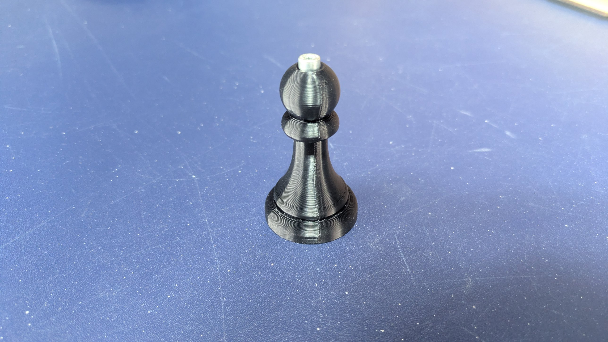
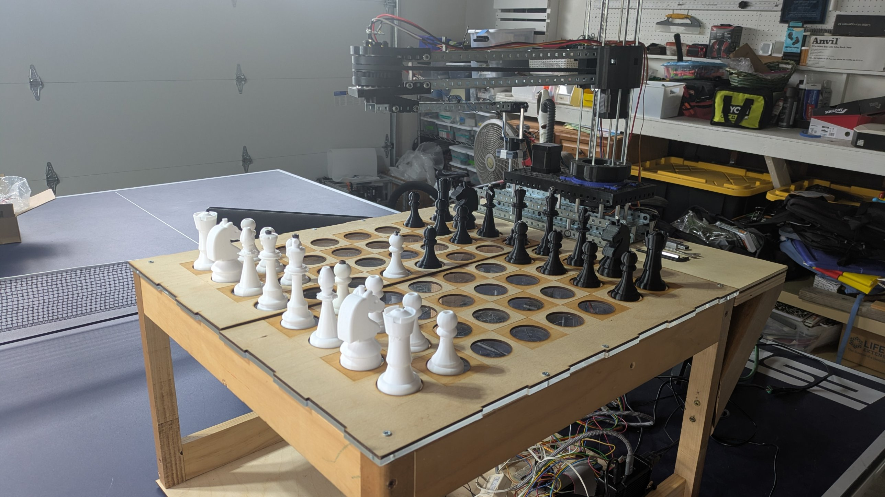
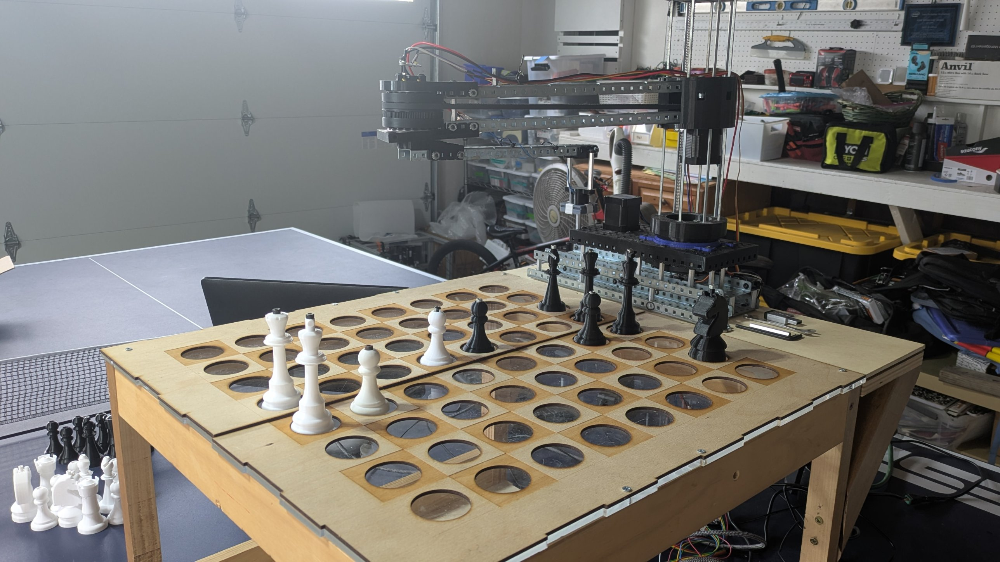
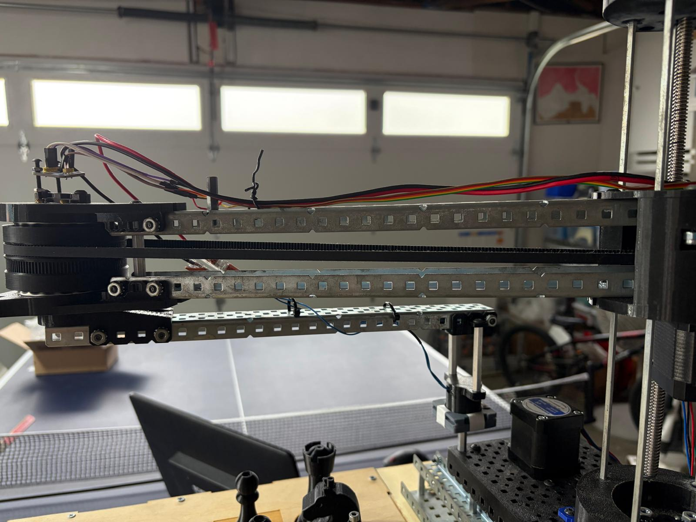
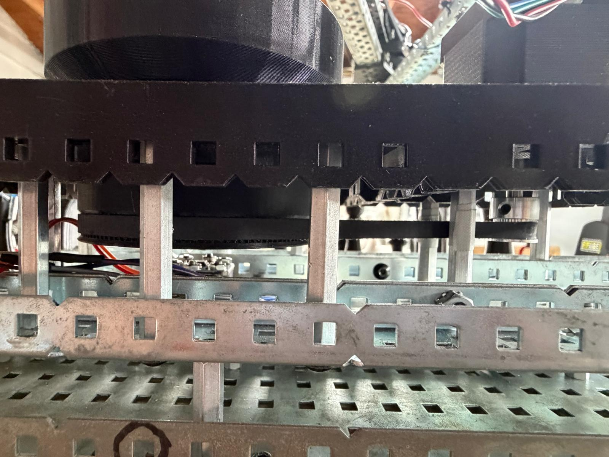

The Robot Arm
A SCARA arm with a lifting column and an electromagnet, driven by stepper motors and built on top of a wooden box that holds the electronics.

How it works
The arm has three axes. Two stepper motors rotate the two horizontal segments of the SCARA arm, which places the end of the arm over any square. A third axis lifts the whole arm up and down so the electromagnet can pick a piece off the board. When the magnet is energized through a relay, the piece is held and carried to its destination square, then released. A Raspberry Pi drives the stepper drivers and the relay.
Initial design plan
The first design review, from December 2025, set the motor requirements. Everything runs from a 12 V supply.
| Motor | Purpose | Speed requirement | Voltage | Max current |
|---|---|---|---|---|
| Linear actuator | Lifts the whole arm so a piece can be taken off the board | Slow, high torque. It must resist gravity and hold the rest of the arm. | 12 V | 1 to 1.5 A |
| Rotator stepper 1 | Rotates the first horizontal segment | Medium. No gravity load, but a piece should move in under 5 seconds. | 12 V | 2 A |
| Rotator stepper 2 | Rotates the second horizontal segment for an additional degree of freedom | Same as stepper 1 | 12 V | 2 A |
We chose stepper motors for their precision, and a driver with a high tolerance for our motors so they would not overheat. The initial plan used gear ratios of 1/5 for the lift and 3/10 for each rotator, which led to the problem described below.
The electromagnet
The pickup is an electromagnet switched by a relay. On the bench we checked tolerances and how much power it takes to hold a piece, and tried several metals to set into the pieces I designed so the magnet has something to grip. The pieces use M4 screws set into the top for this.




Board and box
The box is mainly wood. The top layer is laser-cut and engraved wood, with an acrylic layer under it so the camera can see through. The box also houses all of the electronics. Test pieces and fits were checked against the board throughout, and I adjusted my piece design to get the hole-to-board clearance right.


From gears to belts
Along with various strength and tolerance adjustments, the biggest change came from the gears in the original design. They were too imprecise. The motor position varied by about 2 degrees of motion, and there was no repeatable zero position, which made calibration hard.



What we'd improve
The arm has a slight tilt. A more rigid design would remove it and help calibration.